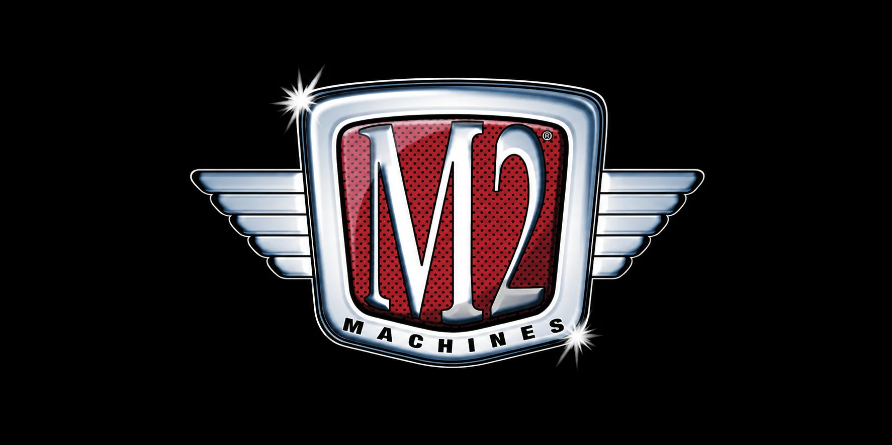

Vintage cars, muscle machines and trucks.
DIECAST DISTRICT / BRAND ENCYCLOPEDIA 13

Discover the world of M2 Machines.
A collector's guide to American automotive history, detailed diecast replicas, classic cars, trucks, castings and themed releases.
13THE COLLECTOR SERIES
QUICK NAVIGATION
Inside this collector's guide.
01 / THE BRAND
What is M2 Machines?
M2 Machines is a diecast model brand known for detailed replicas inspired by American automotive history. Its range includes classic cars, muscle cars, pickups, vans and other vehicles, often presented with period-specific styling and themed packaging.
The brand is especially familiar to collectors of 1:64 scale vehicles, and it also offers larger-scale models and other formats. Individual series can differ in construction, features and presentation, so check the exact product listing before buying.
A key format in its small-scale collector range.
Detailed styling, themed releases and variations.
02 / BRAND DNA
What makes M2 Machines stand out?
Automotive nostalgia
The catalogue draws heavily on classic American motoring, including vehicles from the 1950s through later muscle-car eras.
Vehicle-specific styling
Collectors often look for authentic body shapes, trim, wheels, grilles and other details that identify a particular year or version.
Themed series
Models may be grouped into themed releases or collections. Packaging and series names can help identify where a model belongs.
Variations
Colour, wheels, decoration, packaging and other release details can differ even when two models share the same basic casting.
03 / THE COLLECTION
Popular M2 Machines themes
M2 Machines has used a variety of series and themed collections over time. These broad themes help you explore the range; always check the current catalogue for exact series names and available releases.
Vintage American cars
Classic coupes, sedans and convertibles with period styling and nostalgic appeal.
Muscle cars
Performance-focused American cars from iconic muscle-car generations.
Pickups and vans
Classic pickups, utility vehicles and vans that add variety to a car collection.
Transporters and sets
Selected releases pair vehicles with haulers or themed presentation pieces. Check the exact set contents.
Collector note: Some M2 releases include extra parts or presentation features. Confirm whether the listing includes a base, display case, hauler or accessories rather than assuming these come with every model.
04 / SCALE & CRAFT
Understanding M2 Machines scale
M2 Machines is strongly associated with 1:64 collecting, but its wider range includes other scales. At an exact 1:64 scale, a real car measuring 4,480 mm long would be about 70 mm long as a model.
Details to inspect
- Scale stated on the package
- Body proportions and year-specific details
- Wheels, tyres and stance
- Paint finish and tampo placement
- Interior and opening features, if listed
- Base, packaging and series number
Construction can vary
Do not assume every M2 model has identical materials or moving parts. Read the specific product information to understand its construction and features.
Opening hoods, doors or other features should be confirmed for the individual release, not assumed from the brand name.
05 / BEGINNER'S GUIDE
How to start collecting M2 Machines
Choose a vehicle era
Start with classic cars, muscle cars, pickups or a particular manufacturer you enjoy.
Learn the series name
Record the series, vehicle name, scale and release details so you can identify the exact model.
Inspect the packaging
Check card or box condition, display case, accessories and whether the model is securely presented.
Compare before buying
Use actual-item photos and compare prices for the same release, not just similar-looking models.
Quick buying checklist
- Is the scale clearly stated?
- Does the model match the exact series and colour?
- Are any advertised accessories or extra parts included?
- Is the packaging condition shown clearly?
- Is the seller reputable and the price reasonable?
06 / COLLECTOR KNOW-HOW
Variations, value & care
Are all variations rare?
No. Different colours, packaging or wheel designs can be interesting to collectors, but a variation is not automatically rare or valuable. Availability, condition and demand for the exact release matter.
What should you check on a sealed model?
Inspect card or box corners, blister or case clarity, and whether the model and any accessories are present. For loose models, check paint, wheels, base and small details.
How should you store M2 models?
Keep them away from direct sunlight, moisture and heavy dust. Store original packaging without crushing it, and use a stable display case for loose models.
07 / QUICK ANSWERS
M2 Machines FAQs
Is M2 Machines mainly a 1:64 brand?
Its 1:64 range is well known among collectors, but the wider catalogue includes other scales and formats. Check each product listing.
Does M2 Machines make only American cars?
American vehicles are a major part of its identity, though the exact catalogue can vary by release and licensing.
Do all M2 models have opening parts?
No. Features vary by model. Check the product description for opening hoods, doors or other moving parts.
What is a casting variation?
It is a difference between releases based on the same basic model design, such as colour, wheels, trim or decoration.
What should a beginner buy first?
Choose a vehicle you like, confirm the exact release and condition, and stay within a comfortable collecting budget.
REFERENCE DESK
Learn more
Diecast District is an independent collector-education project and is not affiliated with or endorsed by M2 Machines. Product lines and release details may change; verify current information with the manufacturer or seller.